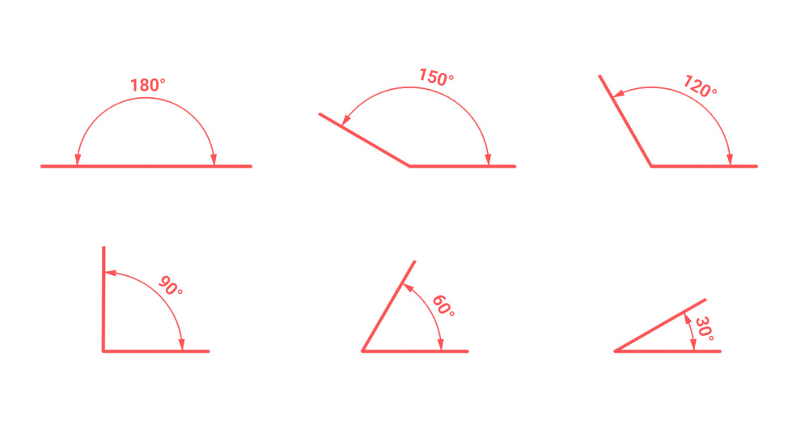
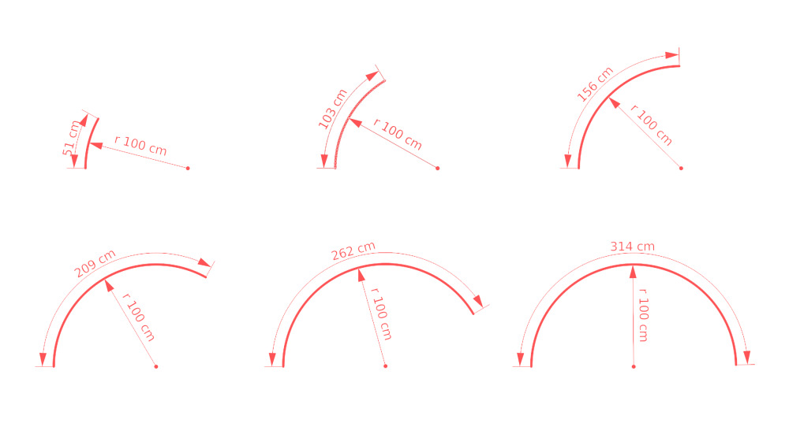

Dimensions
MeasureIt_ARCH dimensions display a measurement.
Dimension Types
MeasureIt_ARCH offers the following Dimension Types:
- Aligned: A straight line measurement between two points.

- Axis: A straight line measurement between two points, along a specified axis.

- Bounds: Measurements along the X,Y,Z axes of an object's (or collection of object's) bounding box.
- Angle: Measures the angle between two lines.

- Arc: Measures the radius and arc length along an arc defined by 3 points.

- Area: Measures the Area of defined by a selection of object faces.
Adding Dimensions (MeasureIt_ARCH Main Panel)
Buttons for adding each of the dimension types can be found in the MeasureIt_ARCH main panel, in the 3D viewport. You can also access these operators by search for their name in Blender's the Operator Search menu (F3).
Aligned
Adds an Aligned Dimension between 2 Objects or Vertices.
- In Object Mode: Select two objects and then press the Aligned Button.
- In Edit Mode: Select two or more Vertices and press the Aligned Button.
Axis
- Adds a Dimension that measures along a single Axis between 2 Objects or Vertices.
- Object Mode: Select two objects and then press the Aligned Button.
-
Edit Mode: Select two or more Vertices and press the Aligned Button.
-
Axis Selection: Picks the axes to be dimensioned on creation.
Bounds (Object Mode Only)
- Adds a set of Dimensions that measure the Bounding Box of the selected object
- Axis Selection: Picks the bounding box axis to be displayed on creation.
Angle (Edit Mode Only)
- Adds an Angle Dimension for 3 selected vertices.
- The 2nd vertex selected defines the corner of the angle.
Arc (Edit Mode Only)
- Adds an Arc Dimension circumscribing the 3 selected vertices.
Area (Edit Mode Only)
- Adds an Area Dimension to the selected faces.
- The Area Dimension text will be placed at the center of the bounding box of the active face.
 Dimension Style (Color Swatch Icon)
Dimension Style (Color Swatch Icon)
- Selects a Style to be assigned to new dimensions on creation.
View Plane (Axis Icon)
- Lets you select the preferred view plain for new dimensions (used to automatically place dimensions on creation).
- XY Plane (Plan View): Dimensions placed to be viewed from the top or bottom.
- YZ Plane (Section/ Elevation View): Dimensions placed to be viewed from the left or right.
- XZ Plane (Section/ Elevation View): Dimensions placed to be viewed from the front or back.
- None: Dimensions placement will adjust automatically based on your viewpoint and the angles of the adjacent surfaces.
Dimension List (Object Settings)
The Dimension List lets you select and edit the properties of the dimensions attached to the actively selected object.

- Color: Sets Dimension Color.
- Link Style (Link or Broken Link Icon): Toggles if this Dimension uses a Style.
- Visibility (Eye Icon): Toggles the Dimension's visibility.
- Delete (x Icon): Deletes the Dimension.
Dimension Sub Menu (Chevron Icon)
- Add to Area (Edit Mode Only): Adds selected Faces to the active Area Dimension.
- Remove from Area (Edit Mode Only): Removes selected Faces from the active Area Dimension.
- Cursor to Arc Origin: Snaps the 3D cursor to the center of the active Arc Dimension.
Dimension Settings (Object Settings)

- Font: Lets you select a custom font for the Dimension.
- View Plane: The preferred view plane for the Dimension.
- XY Plane (Plan View): Dimension will be placed to be viewed from the top or bottom.
- YZ Plane (Section/ Elevation View): Dimension will be placed to be viewed from the left or right.
- XZ Plane (Section/ Elevation View): Dimension will be placed to be viewed from the front or back.
- None: Dimension's placement will be based on the angles of the adjacent surfaces.
- Measurement Axis (Axis & Bounds Dimensions Only): Select the Axis to Measure.
- Visible In View: Limit the Dimension's visibility to a specific Camera in your scene.
- If no Camera is selected the Dimension will be visible in all Cameras.
- If a Camera is selected the Dimension will only be visible when that Camera is the Active Camera.
- Line Weight: The Dimension's Line Weight.
- Distance: The Distance of the Dimension Text from the Objects or Vertices it's attached to.
- Radius (Arc and Angle Dimensions Only): The Distance of the Dimension Text from the center of the Arc or Angle.
- Offset: The offset distance from the ends of the Dimension line to the Vertex or Object it's attached to.
- Rotation: Rotates the Dimension around the axis of its measurement.
- Font Size: The Dimension font size.
- Resolution: The Dimension font resolution.
- Alignment: The Dimension text alignment relative to the dimension line (Left, Center, Right).
- Arrow Start & End: Set the style of the dimension terminations.

- Arrow Size: The size of the Dimension's terminations.
- Arrow Angle: The angle of Dimension's triangle and arrow terminations.
- Draw In Front: Makes this element Ignore Visibility tests.
- Evaluate Depsgraph: Evaluate Blender's Dependency Graph before drawing this MeasureIt_ARCH element.